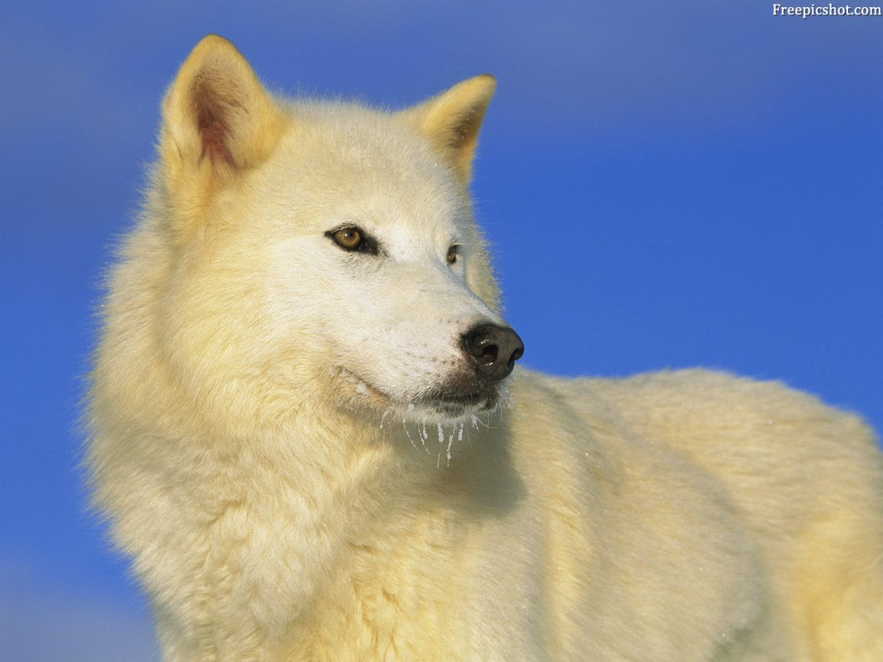

Волк, или серый волк, или обыкнове́нный волк — вид хищных млекопитающих из семейства псовых. Наряду с койових, обыкновенным шакалом (Canis aureus) и ещё несколькими видами составляет род волков (Canis). Кроме того, как показывают результаты изучения последовательности ДНК и дрейфа генов, является прямым предком домашней собаки, которая обычно рассматривается как подвид волка (Canis lupus familiaris). Волк — одно из самых крупных современных животных в своём семействе: длина его тела (без учёта хвоста) может достигать 160 см, длина хвоста — до 52 см, высота в холке — до 90 см; масса тела может доходить до 90-100 кг
